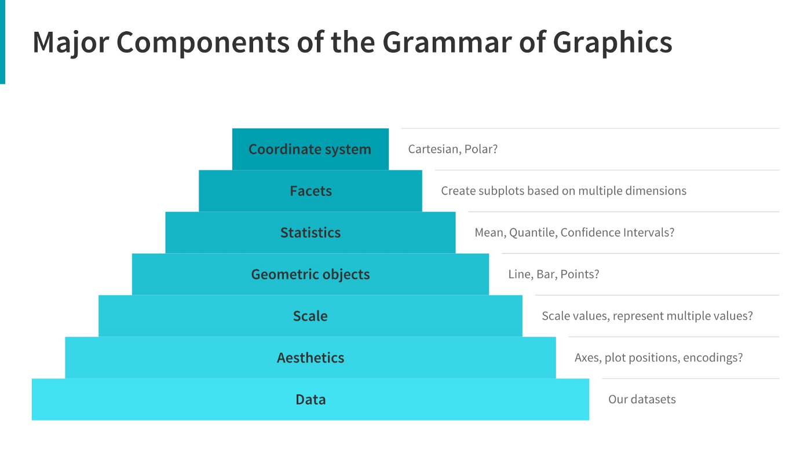

install.packages("ggplot2")Introduction to ggplot2
1 Learning Objectives
- Describe charts using the grammar of graphics
- Create layered graphics that highlight multiple aspects of the data
- Evaluate existing charts and develop new versions that improve accessibility and readability
The greatest possibilities of visual display lie in vividness and inescapability of the intended message. A visual display can stop your mental flow in its tracks and make you think. A visual display can force you to notice what you never expected to see. (“Why, that scatter diagram has a hole in the middle!”) – John Tukey, Data Based Graphics: Visual Display in the Decades to Come
📽 Watch Videos: See Canvas
📖 Readings: 45 minutes
💻 Tutorials: 45-60 minutes
- You’ll be working through a series of tutorials helping you practice making plots with ggplot.
✅ Check-ins: 1
2 Loading in the ggplot2 Package
In this class, we’re going to use the ggplot2 package to create graphics in R. This package is already installed as part of the tidyverse, but can be installed:
and/or loaded:
library("ggplot2")
# alternatively
library("tidyverse") # (my preference!)Remember - packages should loaded in the setup chunk as follows:
#| label: setup
#| include: false
library(tidyverse)
3 Data Visualization with ggplot2
To get an overview of how visualization works with ggplot2, read through Chapter One in R for Data Science .
📖 Required Reading: Data visualization.
This coursework will walk you through the different sections of Chapter Nine in R for Data Science.
3.1 The Grammar of Graphics
The grammar of graphics is an approach first introduced in Leland Wilkinson’s book (Wilkinson 2005). Unlike other graphics classification schemes, the grammar of graphics makes an attempt to describe how the data set itself relates to the components of the chart.
This has a few advantages:
- It’s relatively easy to represent the same data set with different types of plots (and to find their strengths and weaknesses)
- Grammar leads to a concise description of the plot and its contents
- We can add layers to modify the graphics, each with their own basic grammar (just like we combine sentences and clauses to build a rich, descriptive paragraph)

In general, you will fill in the template below to build your graph:
ggplot(data = <Data>) +
<Geom_Function>(mapping = aes(<Mappings>),
position = <Position>) +
<Facet_Function> +
<Scale_Function> +
<Theme_Function>3.2 Making Your First ggplot
💻 Required Tutorials
3.3 Aesthetics
The aesthetics are what you map a variable to and can include, most commonly:
| Aesthetic | Variable Type(s) | Argument Code |
|---|---|---|
| x-axis | numeric, discrete, factor | x = |
| y-axis | numeric, discrete, factor | y = |
| color for points/lines | discrete, factor | color = |
| color for boxes/bars | discrete, factor | fill = |
| shape (points) | discrete, factor | shape = |
| alpha (transparency) | numeric, discrete, factor | alpha = |
| line type (e.g. dashed) | discrete, factor | linetype = |
| line width | discrete, factor | linewidth = |
A variable can be mapped to more than one aesthetic (e.g. color and shape), but an aesthetic should only correspond to one variable.
3.4 geoms
The geometry is the “shape” your graph will have, e.g., points, boxes, bars, densities, etc. Here are some of the most common:
| Geometry | Variable Type(s) | R code |
|---|---|---|
| Scatterplot | Numeric (x, y) | geom_point() |
| Histogram | Numeric (x) | geom_histogram() |
| Bar Plot | Factor (counted) | geom_bar(), geom_col() |
| Line Plot | Numeric (x, y) | geom_line() |
| Box Plot | Numeric (x or y) and Factor (y or x) | geom_boxplot() |
| Model Line | Numeric (x, y) | geom_smooth() |
The aesthetics available will vary depending on the geometry chosen. More than one geometry can be used (e.g. geom_point() and geom_smooth().
What type of chart to use?
It can be hard to know what type of chart to use for a particular type of data. I recommend figuring out what you want to show first, and then thinking about how to show that data with an appropriate plot type. Consider the following factors:
What type of variable is
x? Categorical? Continuous? Discrete?What type of variable is
y?How many observations do I have for each
x/yvariable?Are there any important moderating variables?
Do I have data that might be best shown in small multiples? E.g. a categorical moderating variable and a lot of data, where the categorical variable might be important for showing different features of the data?
Once you’ve thought through this, take a look through catalogs like the R Graph Gallery to see what visualizations match your data and use-case.
3.5 Getting a Bit Fancier
In this section we dig a bit deeper into how we can make our code more efficient and other ways we can add additional variables to our plots.
Global vs. local aesthetics
Sometimes we want to set aesthetics that apply to all graphs (e.g. x-axis and y-axis variables) - we call these global aesthetics and put them in the ggplot() function. For aesthetics that should only apply to a specific geometry, or local aesthetics, we put them in the the geom_xxx() function.
ggplot(data = <Data>,
mapping = aes(<Mappings>)) + #global aesthetics
<Geom_Function>(mapping = aes(<Mappings>), #local aesthetics
position = <Position>) +
<Facet_Function> +
<Scale_Function> +
<Theme_Function>3.6 Plot Customization
📖 Optional Reading: Exploratory Data Analysis
📖 Optional Reading: Communication
Here are a couple of more overviews of additional functions that can be helpful for customizing your plots.
✅ Check-in
Some of the following can be answered just from the overview provided. Others you might need to look up!
Use the following code for Question 1 and 2:
ggplot(data = mpg) +
geom_point(mapping = aes(x = displ,
y = hwy),
color = "blue")Question 1 – What specifically does the code ggplot(data = mpg) do?
Question 2: What aesthetics does this plot contain?
Question 3: Which of the following changes would set the color of the points to be blue?
## Option A
ggplot(data = mpg) +
geom_point(
mapping = aes(x = displ,
y = hwy,
color = blue)
)
## Option B
ggplot(data = mpg) +
geom_point(
mapping = aes(x = displ,
y = hwy),
color = "blue"
)
## Option C
ggplot(data = mpg,
mapping = aes(color = "blue")
) +
geom_point(
mapping = aes(x = displ,
y = hwy)
)Question 4: Match each plot with the geom_XXX() function used to create it! Write the correct function for each graph type.
Line Chart
Boxplot
Histogram
Area Chart
geom_boxplot()geom_point()geom_hist()geom_bar()geom_smooth()geom_point()geom_area()geom_line()geom_histogram()
Question 5: Match the code to the type of aesthetics that are being used:
ggplot(data = mpg,
mapping = aes(x = mpg,
y = hwy)
) +
geom_point()ggplot(data = mpg) +
geom_point(mapping = aes(x = mpg,
y = hwy))Question 6: Which arguments for geom_jitter() control the amount of jittering?
Question 7: What can the labs() function do? Select all that apply.
References
Sarkar, Dipanjan (DJ). 2018. “A Comprehensive Guide to the Grammar of Graphics for Effective Visualization of Multi-Dimensional….” Medium. https://towardsdatascience.com/a-comprehensive-guide-to-the-grammar-of-graphics-for-effective-visualization-of-multi-dimensional-1f92b4ed4149.
Wilkinson, Leland. 2005. The Grammar of Graphics. 2nd ed. Statistics and Computing. New York: Springer Science.